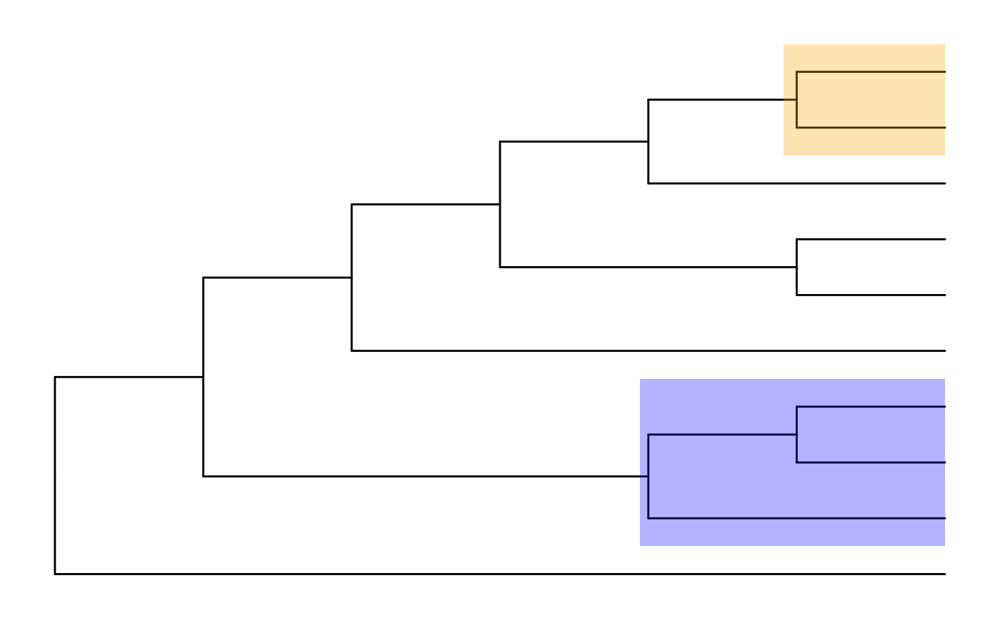
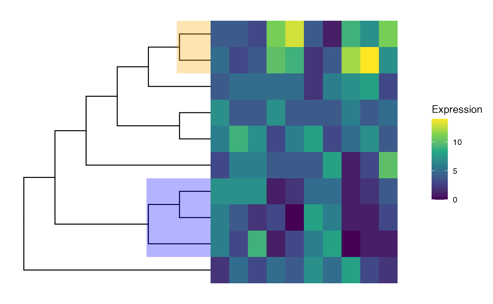
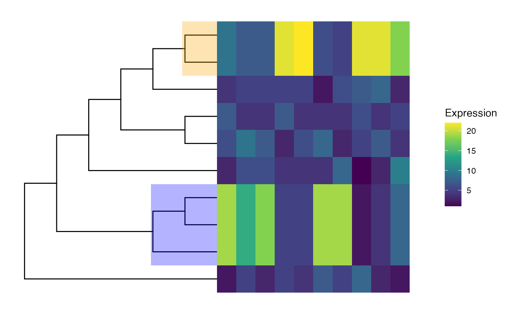
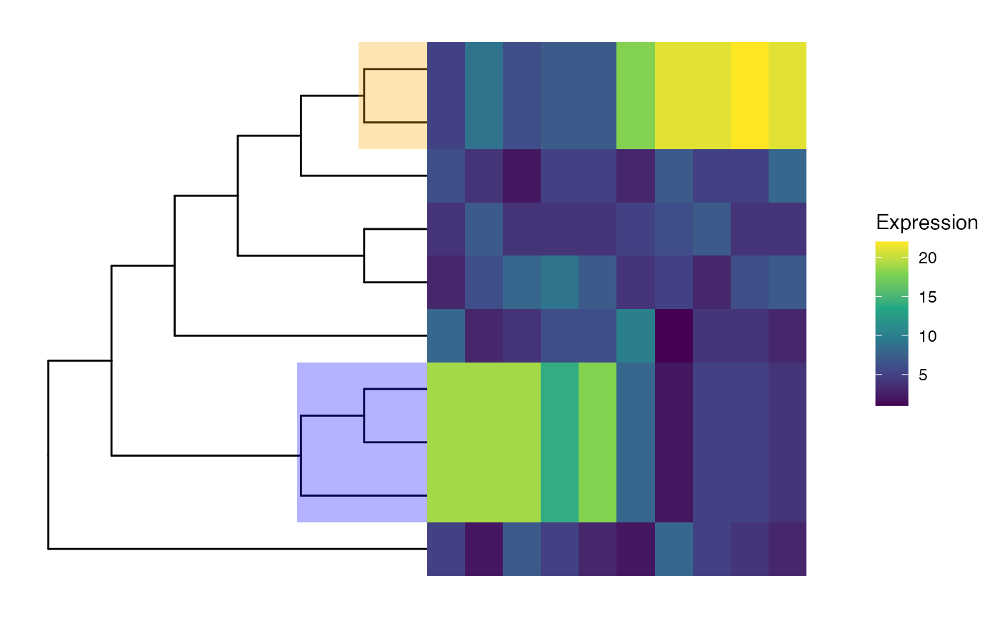
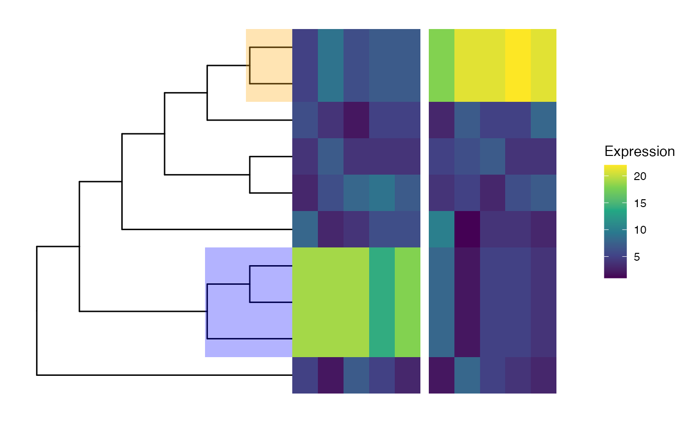
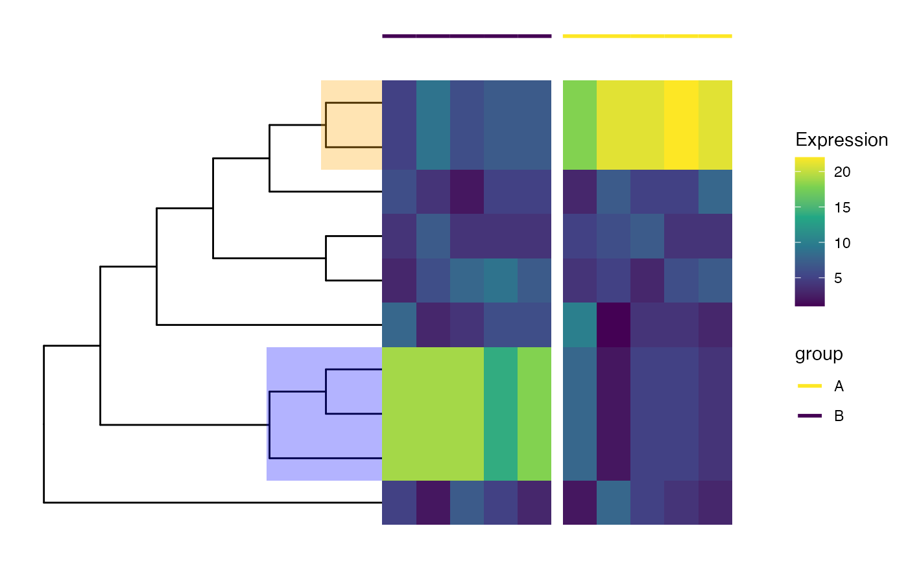
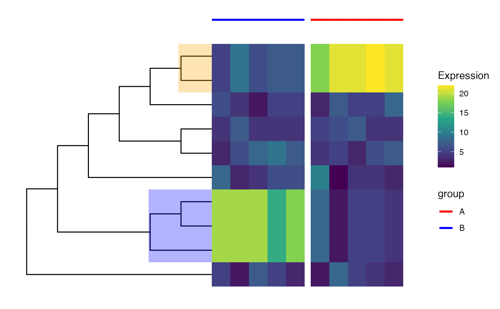
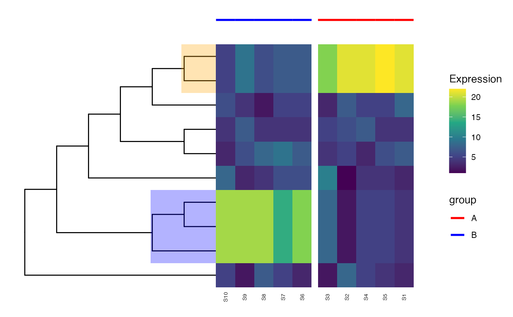
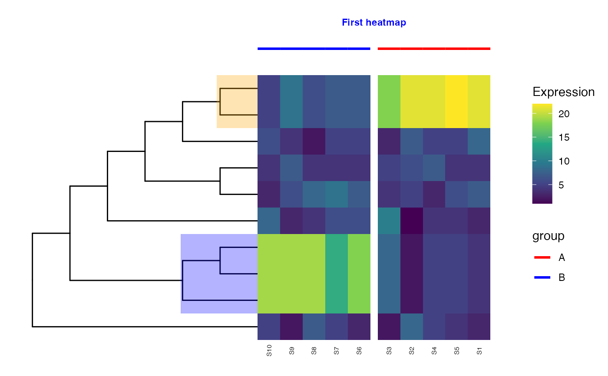
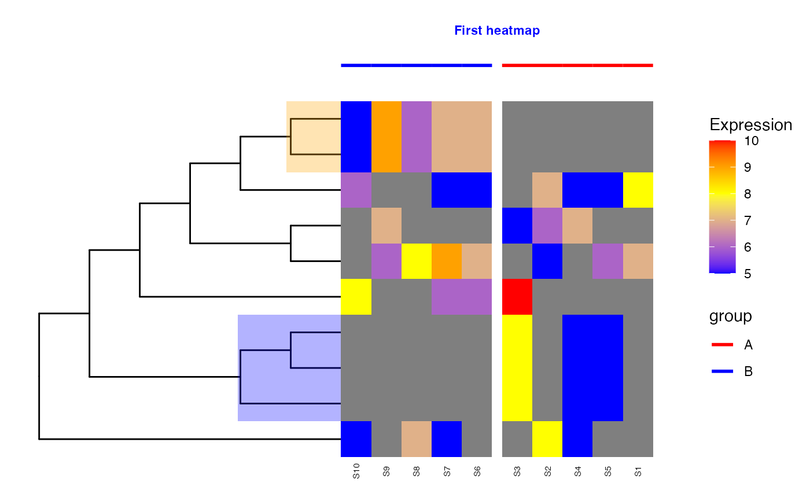

Generate a heatmap corresponding to an arbitrary aggregation level of a tree
Source:R/TreeHeatmap.R
TreeHeatmap.RdGenerate a heatmap corresponding to an arbitrary aggregation level of a tree.
Usage
TreeHeatmap(
tree,
tree_fig,
hm_data,
tree_hm_gap = 0,
rel_width = 1,
cell_line_color = NA,
cell_line_size = 0,
column_order = NULL,
column_split = NULL,
column_split_gap = 0.2,
column_split_label = NULL,
split_label_fontface = "bold",
split_label_color = "black",
split_label_size = 3,
split_label_angle = 0,
split_label_offset_x = 0,
split_label_offset_y = 2,
split_label_hjust = 0.5,
split_label_vjust = 0,
column_anno = NULL,
column_anno_size = 1,
column_anno_color = NULL,
column_anno_gap = 0.1,
legend_title_hm = "Expression",
legend_title_column_anno = "group",
show_colnames = FALSE,
colnames_position = "top",
colnames_angle = 0,
colnames_offset_x = 0,
colnames_offset_y = 0,
colnames_size = 4,
colnames_hjust = 0.5,
show_rownames = FALSE,
rownames_position = "right",
rownames_angle = 0,
rownames_offset_x = 0,
rownames_offset_y = 0,
rownames_size = 4,
rownames_hjust = 0.5,
rownames_label = NULL,
show_title = FALSE,
title_hm = "First heatmap",
title_fontface = "bold",
title_color = "black",
title_size = 3,
title_angle = 0,
title_offset_x = 0,
title_offset_y = 2,
title_hjust = 0.5,
cluster_column = FALSE,
dist_method = "euclidean",
hclust_method = "ave",
show_row_tree = TRUE
)Arguments
- tree
A
phyloobject.- tree_fig
A
ggtreeobject corresponding totree. This will be used to represent the tree in the resulting figure.- hm_data
A
data.framewith the values to show in the heatmap. The row names should correspond to the nodes of tree.- tree_hm_gap
A numeric scalar specifying the gap between the tree and the heatmap.
- rel_width
A numeric scalar specifying the width of heatmap relative to the width of the tree. For example, if
rel_width = 1, the width of the heatmap is the same as the width of the tree.- cell_line_color
A color for the lines separating cells in the heatmap.
- cell_line_size
A numeric scalar specifying the line width for lines separating cells in the heatmap.
- column_order
A character vector specifying the display order of the columns in the heatmap. Should correspond to the column names of
hm_data. Ignored when column_split is provided.- column_split
A named character vector that provides the grouping information used to split the columns in the heatmap. The names should correspond to the column names of
hm_data.- column_split_gap
A numeric scalar specifying the gap between the groups of split columns in the heatmap.
- column_split_label
A named character vector to label the column split. The names should correspond to the values in
column_split.- split_label_fontface
The fontface of the labels of the column split.
- split_label_color
The color of the the labels of the column split.
- split_label_size
The size of the the labels of the column split.
- split_label_angle
The angle of the the labels of the column split.
- split_label_offset_x
A numeric value to shift the labels of the column split along the x-axis.
- split_label_offset_y
A numeric value to shift the labels of the column split along the y-axis.
- split_label_hjust
The horizontal justification for the labels of the column split: e.g. 0 (left aligned); 0.5 (centered); 1 (right aligned).
- split_label_vjust
Similar to
split_label_hjust, but controls vertical justification.- column_anno
A named vector to specify labels that are used to annotate the columns of heatmap.
- column_anno_size
A numeric value to specify the size of the annotation bar.
- column_anno_color
A named vector to specify colors that are used to annotate the columns of the heatmap.
- column_anno_gap
A numeric value to specify the gap between the column annotation bar and the heatmap.
- legend_title_hm
The legend title of the heatmap.
- legend_title_column_anno
The legend title of the column annotation.
- show_colnames
A logical value to specify whether column names should be displayed.
- colnames_position
The position of column names, either "top" or "bottom".
- colnames_angle
A numeric scalar specifying the angle of column names.
- colnames_offset_x
A numeric value to shift column names on the x-axis.
- colnames_offset_y
A numeric value to shift column names on the y-axis.
- colnames_size
A numeric value to specify the size of column names.
- colnames_hjust
The horizontal justification for column names: e.g. 0 (left aligned); 0.5 (centered); 1 (right aligned).
- show_rownames
A logical value to specify whether row names should be displayed.
- rownames_position
The position of the row names, either "right" or "left".
- rownames_angle
A numeric value specifying the angle of row names.
- rownames_offset_x
A numeric value to shift row names on the x-axis.
- rownames_offset_y
A numeric value to shift row names on the y-axis.
- rownames_size
A numeric value to specify the size of row names.
- rownames_hjust
The horizontal justification for row names: e.g. 0 (left aligned); 0.5 (centered); 1 (right aligned).
- rownames_label
A named vector to annotate the rows of the heatmap instead of the row names of hm_data.
- show_title
A logical value to specify whether the title should be displayed.
- title_hm
The title of the heatmap.
- title_fontface
The fontface of the title.
- title_color
The color of the title.
- title_size
The size of the title.
- title_angle
The angle of the title.
- title_offset_x
A numeric value to shift the title along the x-axis.
- title_offset_y
A numeric value to shift the title along the y-axis.
- title_hjust
The horizontal justification for the title: e.g. 0 (left aligned); 0.5 (centered); 1 (right aligned).
- cluster_column
A logical scalar, specifying whether columns of the heatmap should be clustered by similarity. This is ignored when column_order is given.
- dist_method
See method in
dist. The distance method used for clustering columns.- hclust_method
See method in
hclust. The clustering method used for clustering columns.- show_row_tree
A logical scalar (default
TRUE). IfFALSE, the figure provided intree_figis not shown.
Examples
suppressPackageStartupMessages({
library(TreeSummarizedExperiment)
library(ggtree)
library(ggplot2)
library(scales)
})
## Load example data (tiny tree with corresponding count matrix)
tse <- readRDS(system.file("extdata", "tinytree_counts.rds",
package = "treeclimbR"))
## Prepare the tree figure
tree_fig <- ggtree(rowTree(tse), branch.length = "none",
layout = "rectangular") +
geom_hilight(node = 18, fill = "orange", alpha = 0.3) +
geom_hilight(node = 13, fill = "blue", alpha = 0.3)
tree_fig

## Simple heatmap with tree
TreeHeatmap(tree = rowTree(tse), tree_fig = tree_fig,
hm_data = SummarizedExperiment::assay(tse, "counts"))

## Aggregate counts for each of the highlighted subtrees
tseagg <- aggTSE(
tse,
rowLevel = c(13, 18,
setdiff(showNode(tinyTree, only.leaf = TRUE),
unlist(findDescendant(tinyTree, node = c(13, 18),
only.leaf = TRUE)))))
## Visualize aggregated heatmap with tree
TreeHeatmap(tree = rowTree(tseagg), tree_fig = tree_fig,
hm_data = SummarizedExperiment::assay(tseagg, "counts"))

## Cluster columns
TreeHeatmap(tree = rowTree(tseagg), tree_fig = tree_fig,
hm_data = SummarizedExperiment::assay(tseagg, "counts"),
cluster_column = TRUE)

## Split columns
col_split <- ifelse(colnames(tseagg) %in% paste0("S", seq_len(5)), "A", "B")
names(col_split) <- colnames(tseagg)
TreeHeatmap(tree = rowTree(tseagg), tree_fig = tree_fig,
hm_data = SummarizedExperiment::assay(tseagg, "counts"),
cluster_column = TRUE, column_split = col_split)

## Annotate columns
col_anno <- col_split
TreeHeatmap(tree = rowTree(tseagg), tree_fig = tree_fig,
hm_data = SummarizedExperiment::assay(tseagg, "counts"),
cluster_column = TRUE, column_split = col_split,
column_anno = col_anno, column_anno_gap = 1)

## Change annotation colors
TreeHeatmap(tree = rowTree(tseagg), tree_fig = tree_fig,
hm_data = SummarizedExperiment::assay(tseagg, "counts"),
cluster_column = TRUE, column_split = col_split,
column_anno = col_anno, column_anno_gap = 1,
column_anno_color = c(A = "red", B = "blue"))

## Add column names
TreeHeatmap(tree = rowTree(tseagg), tree_fig = tree_fig,
hm_data = SummarizedExperiment::assay(tseagg, "counts"),
cluster_column = TRUE, column_split = col_split,
column_anno = col_anno, column_anno_gap = 1,
column_anno_color = c(A = "red", B = "blue"),
show_colnames = TRUE, colnames_position = "bottom",
colnames_angle = 90, colnames_size = 2,
colnames_offset_y = -0.4)

## Add title
TreeHeatmap(tree = rowTree(tseagg), tree_fig = tree_fig,
hm_data = SummarizedExperiment::assay(tseagg, "counts"),
cluster_column = TRUE, column_split = col_split,
column_anno = col_anno, column_anno_gap = 1,
column_anno_color = c(A = "red", B = "blue"),
show_colnames = TRUE, colnames_position = "bottom",
colnames_angle = 90, colnames_size = 2,
colnames_offset_y = -0.4,
show_title = TRUE, title_offset_y = 2,
title_color = "blue")

## Change colors
TreeHeatmap(tree = rowTree(tseagg), tree_fig = tree_fig,
hm_data = SummarizedExperiment::assay(tseagg, "counts"),
cluster_column = TRUE, column_split = col_split,
column_anno = col_anno, column_anno_gap = 1,
column_anno_color = c(A = "red", B = "blue"),
show_colnames = TRUE, colnames_position = "bottom",
colnames_angle = 90, colnames_size = 2,
colnames_offset_y = -0.4,
show_title = TRUE, title_offset_y = 2,
title_color = "blue") +
scale_fill_gradientn(
colours = c("blue", "yellow", "red"),
values = scales::rescale(c(5, 8, 10)),
guide = "colorbar", limits = c(5, 10))
#> Scale for fill is already present.
#> Adding another scale for fill, which will replace the existing scale.
